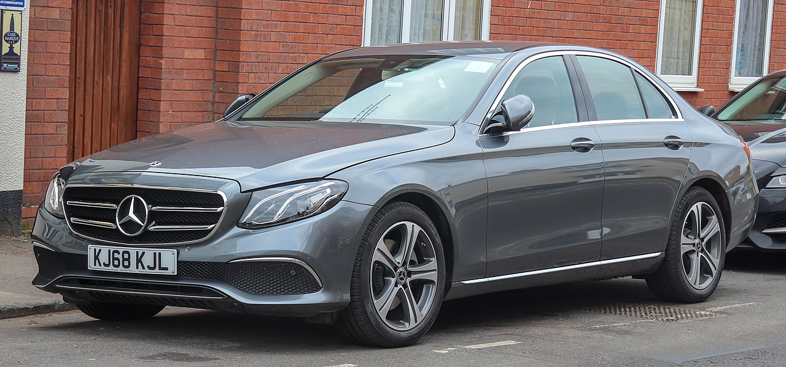

CLS class
Роки виробництва: 2011—2018
Тип кузова: 4‑дв. купе
Колісна база: 4×2
Об'єм бака: 66 л.

G-class
Роки виробництва: 1990 - теперішній час
Тип кузова: 5‑дв. SUV
Об'єм бака: 96 л.

E220d SE
Роки виробництва: 2016 — теперішній час
Об'єм бака: 50–66 л.